A / RGB 314×206 / generated, unselected
Reserve Siding
scenes:biology_park/reserve_sidingAn intact reserve maintenance car beneath a root canopy. Dark cab, obsolete route display, evacuation pictograms, rail switch and walkable siding.
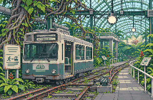
Six generated candidates · owner / Art Director selection pending
Batch 3 is finally approved and registered. Its selected pixels and all earlier approved art are unchanged. These six new images remain generated and unselected.
Scene candidates are opaque RGB 314×206, with exact 1256×824 previews. The separately authored portrait background is RGB 564×278; the conductor foreground is transparent RGBA 564×278. Their exact 4× previews are 2256×1112. Original detailed sources are retained.
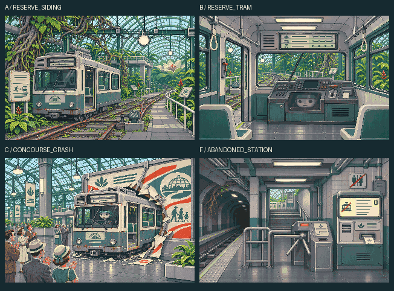
scenes:biology_park/reserve_sidingAn intact reserve maintenance car beneath a root canopy. Dark cab, obsolete route display, evacuation pictograms, rail switch and walkable siding.

scenes:biology_park/reserve_tramInside the same reserve car before power is restored. The original molded-plastic concierge face remains recessed behind an unlit panel.
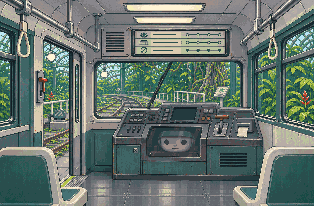
scenes:biology_park/concourse_crashThe authored emergency-spur result: the reserve car has broken through an advertising wall, the conductor has risen, and visitors applaud.
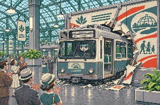
scenes:biology_park/concourse_crash#portraitBackgroundIndependently authored conversation background: empty driver housing, matching crash concourse, applauding visitors and a printed damage form.
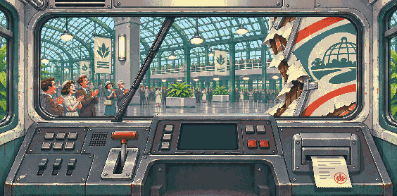
portraits:courtesy_conductor:talkingOne transparent talking foreground: the same cream molded-plastic face and teal visor, now raised on its console-mounted telescoping neck.

scenes:biology_park/abandoned_stationAn underground station with glowing ticket machine, zero fare, closed turnstile, unchecked certification panel and crossed-out bathroom sign.
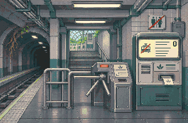
D is a new wide generation, not an enlarged or cropped scene. E is one separate foreground pose. Both use the same canvas origin with no translation, cropping or extra scale adjustment.
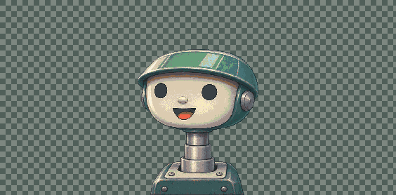
The tour tram establishes materials and technology. The reserve car and its conductor are distinct. Only the explicitly authored concourse result depicts a crash and active character.
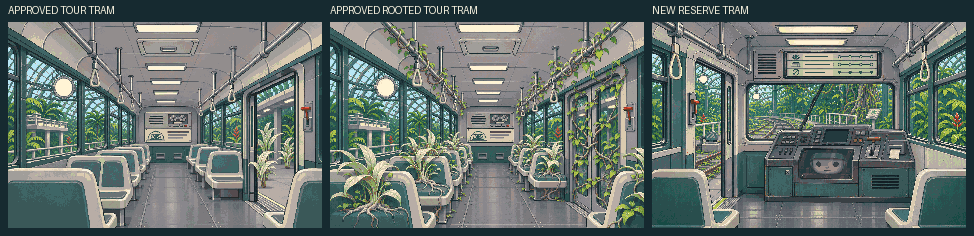
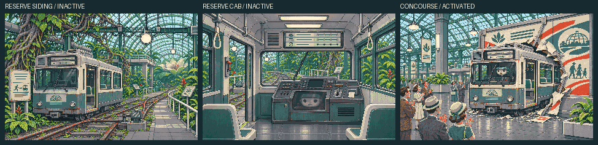
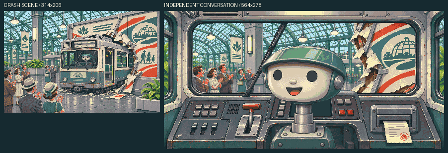
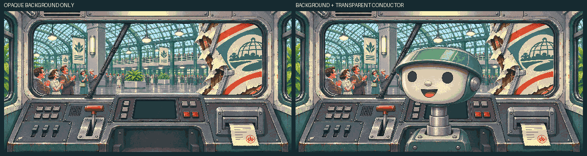
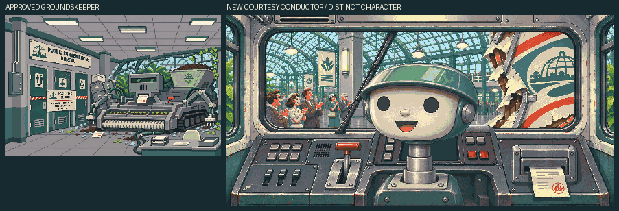
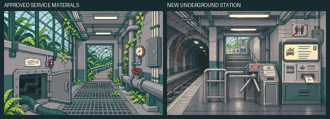

A/B/F microlettering interiors were simplified to deliberate administrative bars. Pictograms, route dots and the zero-fare numeral remain. Allowed/changed masks prove zero changes outside those notice regions. E uses the same native alpha threshold as the approved Batch 1 foreground; original soft-alpha pixels remain archived.
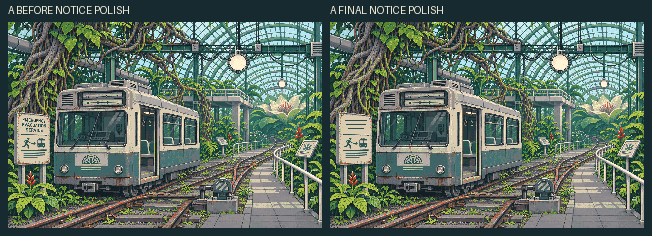
A allowed mask · A changed pixels
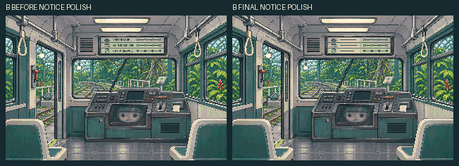
B allowed mask · B changed pixels
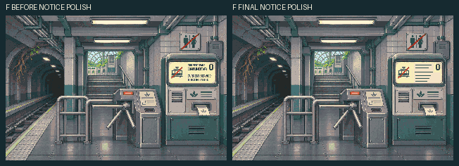
F allowed mask · F changed pixels
Original normalized exports before notice polish and alpha threshold